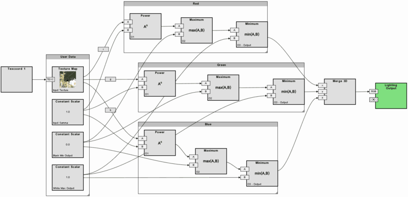
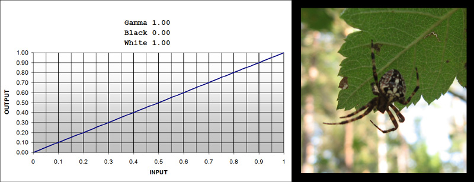
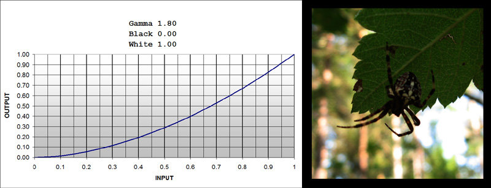
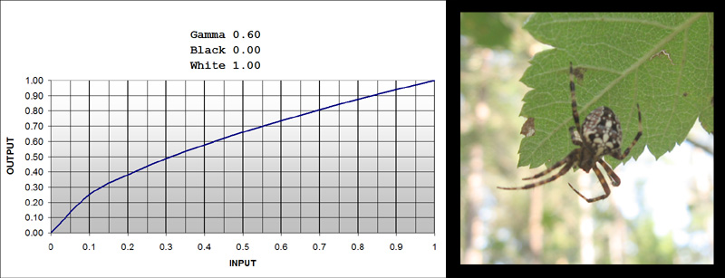
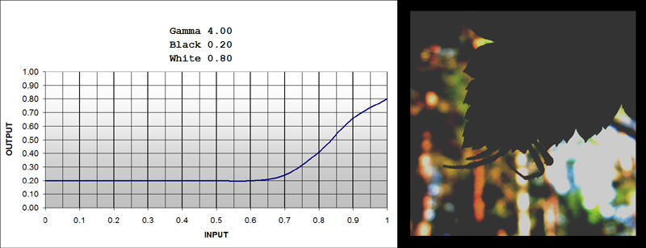

Level adjustment (custom shader)
From C4 Engine Wiki
Level Adjustment (custom shader)
|
It takes three input values (plus the image to be filtered):
γ - input gamma
b - black output
w - white output
Input black and input white are not implemented in this version.
The Maths
The general idea is do perform the following sequence of operations for each color channel:
Input = I = image data
O1 = Iγ
O2 = max ( O1, b )
O3 = min ( O2, w )
Output = O3
The Graph

Click to access full resolution version.
The graph is easier to read and build if you consider the fact that the same Power---->Maximum---->Minimum group repeats three times, once for each channel, and the three constants, γ, b and w, are always connected to the same respective node in each such group. So, just build the red channel set first, then copy those nodes twice and connect. Thus, you can easily add support for the alpha channel as well if you need it (just add a fourth group connected to the a-component of the image, and replace the Merge3D with a Merge4D at the end where everything converges).
Examples from the shader tests



